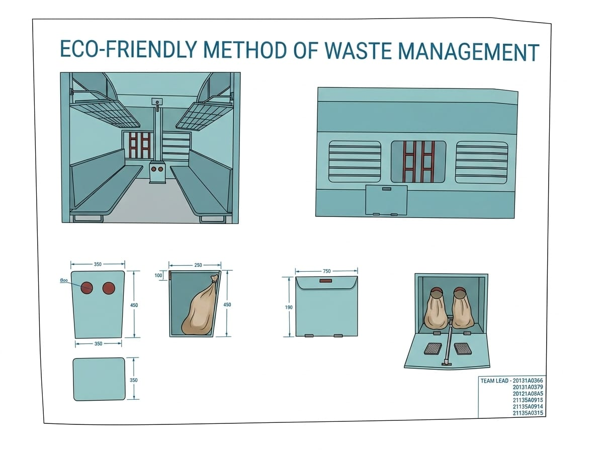

Smart Railway Waste Collection & Management System
A conceptual engineering solution designed to reduce passenger-generated waste accumulation along railway tracks by introducing an organized collection and storage mechanism within railway coaches.
The Smart Railway Waste Collection and Management System is a conceptual engineering solution designed to address waste accumulation along railway tracks.
The concept aims to collect passenger-generated waste directly from train coaches and store it in designated containers for appropriate disposal at railway stations.
The overall objective is to improve environmental cleanliness, reduce track-side pollution and promote sustainable waste-management practices within railway transportation.
Passenger-generated waste such as plastic bottles, food wrappers and paper cups can accumulate along railway corridors when discarded from moving trains.

Original conceptual drawing associated with the project.
- Reduce waste accumulation along railway tracks.
- Improve railway cleanliness and hygiene.
- Reduce dependence on manual track-side cleaning.
- Promote sustainable waste-management practices.
- Support cleaner railway infrastructure.
-
01
Waste collection
Passengers dispose of waste into designated collection points inside the train coach.
-
02
Controlled transfer
The collected material is directed through a controlled collection mechanism toward an integrated storage compartment.
-
03
On-board storage
Waste is temporarily stored in a designated compartment within the train system.
-
04
Station transfer
At railway stations, collected waste can be removed and directed toward recycling or appropriate disposal.
The concept can be further developed by integrating IoT-based monitoring, automated waste segregation and smart sensors for real-time waste-level detection.
A systems-thinking approach to railway waste.
The project translated an environmental problem into a conceptual engineering system by connecting waste collection, on-board storage and station-level disposal.
The concept provides a foundation for future development toward sensor-enabled and automated railway waste-management systems.
This is a conceptual engineering project. No experimental performance values, validated efficiency figures or quantitative system results are claimed on this page.